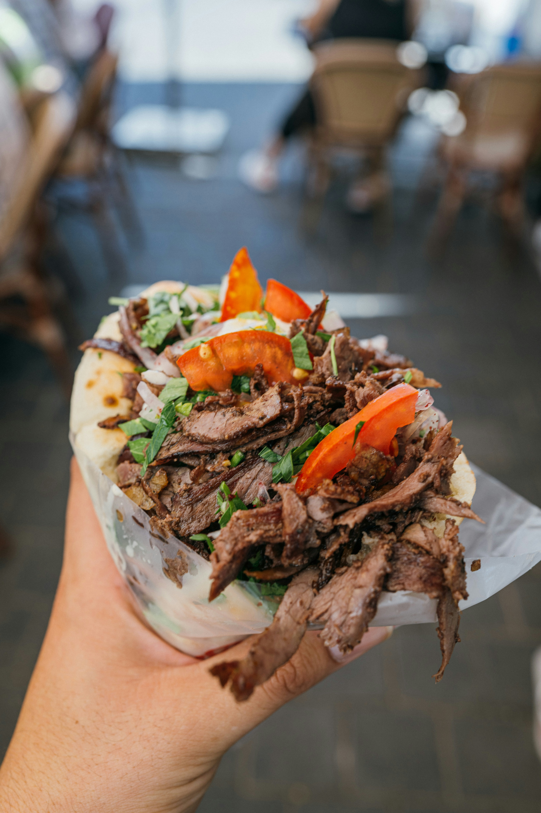

Döner

Açıklama
Döner Türkiye'nin neredeyse her yerinde kolay ve ucuz bir şekilde tüketilebilecek yemeklerin başında gelmektedir. Genelde üniversite öğrencileri ve inşaat işçileri arasında oldukça popülerdir. Hatay usulü döner en bilinen döner çeşitlerindendir.
Malzemeler:
- Et: 500 gr orta yağlı dana kıyma (veya dana-kuzu karışık kıyma)
- Soğan: 1 adet orta boy kuru soğan (rendelenmiş ve suyu sıkılmış)
- 2 yemek kaşığı yoğurt ve 2 yemek kaşığı sıvı yağ (veya zeytinyağı)
- 1 tatlı kaşığı tuz, 1 çay kaşığı karabiber, 1 çay kaşığı kekik ve 1 çay kaşığı kimyon (isteğe göre yarım çay kaşığı pul biber)
Hazırlanışı:
- Rendelediğiniz soğanı avucunuzda sıkarak acı suyunu tamamen süzün. Suyunu sıkmak etin sulanmasını önler ve lezzetini artırır.
- Kıymayı, suyu sıkılmış soğanı, yoğurdu, sıvı yağı ve tüm baharatları derin bir kaba alın. Tüm malzemeler birbirine iyice geçip macun kıvamı alana kadar yaklaşık 5-7 dakika yoğurun.
- Tezgaha geniş bir parça streç film serin. Yoğurduğunuz et harcını streç filmin üzerine koyun ve silindir (salam) şekli vererek hava kalmayacak şekilde sıkıca sarın, uçlarını şeker paketi gibi bükün.
- Hazırladığınız et rulosunu buzdolabının dondurucu (buzluk) kısmına koyun. Etin kolayca ince dilimlenebilmesi için en az 3-4 saat veya bir gece boyunca donmasını bekleyin.
- Donan eti buzluktan çıkarın ve streç filmini soyun. Keskin bir bıçak yardımıyla eti donmuş haldeyken incecik yapraklar halinde dilimleyin.
- Geniş bir tavayı veya döküm tavayı önceden iyice ısıtın ve içine 1 yemek kaşığı tereyağı veya sıvı yağ ekleyin. Dilimlediğiniz döner yapraklarını tavaya tek kat halinde dizin ve yüksek ateşte her iki yüzü kızarana kadar 3-4 dakika pişirin.
- Pişen dönerleri sıcak lavaş, tombik ekmek veya pilav üzerine alın. Yanında ince doğranmış domates, turşu, patates kızartması ve sumaklı soğan ile sıcak servis edin.
Home